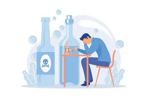

Binge drinking refers to drinking heavily over a short period of time, with the intention of becoming severely intoxicated.
This is not something new. It happens all the time, all over. Throwing caution to the winds, groups of people (big and small), carefully plan and execute such operations, even planning for the aftermath of the debauch, including its health risks and repercussions. It is intentional. Most people involved actually look forward to such occasions. But the harmful effects of binge drinking are numerous. One of the most common is the risk of alcohol poisoning. The effects of this are such that it could be lethal in some cases. Then there is the risk of personal injury, such as broken wrists and ankles.

These usually occur when the individual loses his/her sense of balance in an intoxicated state and falls down. Car accidents are a common occurrence. People drive in an inebriated state, resulting in accidents, some of which turn out to be fatal. Write-ups of such incidents can be read in newspapers almost Then there are other dangers, particularly for women, such as unwanted pregnancies and rapes.
Another reason is unwanted casual sex. There are a number of other fallouts of binge drinking. Fights seem to occur for unexplained reasons. Weight gain caused by excess sugar is another factor. Another reason for weight gain can be attributed to an individual’s capacity to lose track of what and how much he/she is eating. For this, a person needs to understand the way he/she drinks, and how much liquor is imbibed on a particular occasion. One can blame this on a number of things. A person might feel that since everyone is drinking, it is okay to do the same. Also, a person might want to get drunk together with friends. For some people, this holds a special appeal. Another method of avoiding binge drinking is by not using alcohol to make oneself feel better, particularly for avoiding stress, nursing a broken heart after a break-up with a partner, etc. Be careful, you might get more fearful.
Seek professional help. It is not a sign of weakness to seek the help of a therapist. Timely intervention could save one from a lot of tensions and harm. Dr. Gorav Gupta is one of the best deaddiction specialists in Delhi, Gurgaon for addiction treatment. A person has to be aware that one has to somehow reduce the amount of intake despite participating in a bout of binge drinking. Also, one has to learn to stick to one’s limit. Having a glass of water between every drink when on a night out with friends helps keep one in control. Another important factor to keep in mind is to drink slowly. It is not a race. There are many ways to control one’s drinking habits. One should find alcohol that suits one’s taste, so that a drink can be relished, like one’s favourite chilled soft drink on a hot summer day. The elders (the experienced ones) have given us good advice that one should not drink on an empty stomach. As a result, a good meal should be had before one begins to drink. If not possible, a person should eat as much as he/she can while drinking. Having small drinks is a good sign. A person should dilute his/her drink with as much water, soda or soft drink as one can. But remember, the evil effects of alcohol are far too many to be counted. One can take precautions while drinking to prevent any untoward incident. But the key factor to keep in is – it is better not to drink at all than to drink and suffer the consequences.